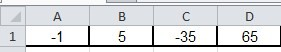
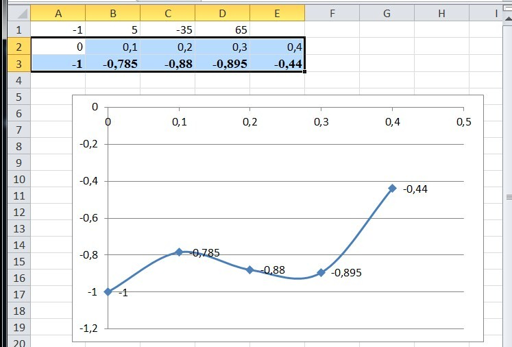
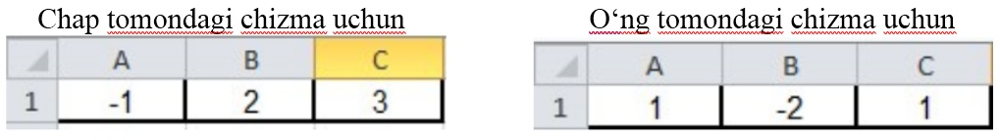
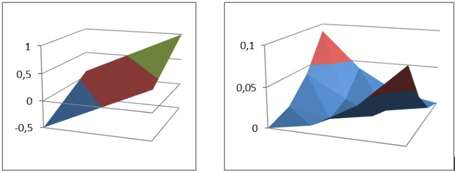

4-DARS. SODDA VA MURAKKAB FUNKSIYALARNING GRAFIKLARI
MS Excel 2010 da sodda va murakkab funksiyalarning grafiklari menyuning Вставка bo‘limi График bandi orqali hosil qilinadi. Sodda va murakkab funksiyaning grafiklarini hosil qilish jarayonini quyidagi mashqlarda ko‘rib chiqamiz.
1-mashq. z=a+bx+cx2+dx3 funksiyaning grafigini hosil qilish.
Bajarish:
A1:D1 kataklarida a,b,c,d koeffitsiyentining quyidagi qiymatlari kiritiladi:

A2:E2 kataklarda x ning qiymatlari 0; 0,1; 0,2; 0,3; 0,4 kiritiladi;
A3:E3 kataklarda mos ravishda x ning qiymatlari uchun, masalan, A3 da =$A1+$B1*A2+$C1*A2*A2+$D1*A2*A2*A2 qaralayotgan formulaning x=0 dagi qiymati hosil bo‘ladi. Qolgan nuqtalarga nisbiy murojaat yordamida davom ettiriladi;
A2:E3 kataklar bloki ajratib olinadi;
A3:E3 kataklar belgilab ajratib olingandan so‘ng, MS Excel 2010 ning tasmasidan
Вставить-Диаграммы-Точечная ketma-ketligi bajariladi.
Hosil bo‘lgan grafik ustiga x ning qiymatlarini chiqarish uchun grafik ustiga o‘ng tugma bosilib, Добавить подписи данных bandi tanlanadi.
Natijada quyidagi oyna hosil bo‘ladi:

2-mashq. z=a+bx+cy va z=ax2+bxy+cy2 funksiyalarning grafiklarini hosil qilish.
Bajarish:
A1:C1 kataklarida a,b,c koefisiyentning qiymatlari:

qiymatlar kiritiladi.
A2:E2 kataklarda x ning qiymatlari 0; 0,1; 0,2; 0,3; 0,4 kiritiladi;
A2:A6 kataklarda y ning qiymatlari 0; 0,1; 0,2; 0,3; 0,4 kiritiladi;
A3:E7 va kataklarda mos ravishda x ning qiymatlari uchun, masalan A4 da =$A1*A2*A2+$B1*A2*A4+$C1*A4*A4 qaralayotgan formulaning x=0, y=0,1 dagi qiymati hosil bo‘ladi. Qolgan nuqtalarga nisbiy murojaat yordamida davom ettiriladi. Bu yerda $ harfi ushbu katakka
absolut (qo‘zg‘almas) murojaat ekanligini bildiradi;
A3:E7 kataklar belgilab ajratib olingandan so‘ng Excel 2010 panelida Вставить bo‘limining “tasma” sidaПоверхность tugmasini bosib, qaralayotgan ifodalarning chizmalarini hosil qilamiz:


1. MS Excel 2010 da grafik hosil qilish imkoniyatlari haqida so‘zlab bering.
2. Funksiya grafiklarini silliqlash uchun qanday usuldan foydalaniladi?
3. Sinfingiz o‘quvchilarini “Informatika va axborot texnologiyalari” fanidan o‘zlashtirish ko‘rsatkichini grafik shaklda hosil qiling.

1. y=3x+4 funksiyaning grafigini hosil qiling.
2. Sinfingiz o‘quvchilarini “Matematika” fanidan o‘zlashtirish ko‘rsatkichini grafik shaklda hosil qiling.